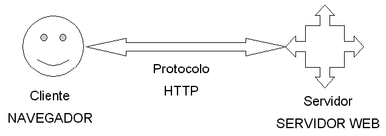

En las aplicaciones web suelen distinguirse tres niveles (como en las arquitecturas cliente/servidor de tres niveles): el nivel superior que interacciona con el usuario (el cliente web, normalmente un navegador), el nivel inferior que proporciona los datos (la base de datos) y el nivel intermedio que procesa los datos (el servidor web). En este capítulo se describen el cliente y el servidor web y se comentan los entornos web en los que se ejecutan las aplicaciones web.
Índice General
2.1. Introducción
Una aplicación web (web-based application) es un tipo especial de aplicación cliente/servidor, donde tanto el cliente (el navegador, explorador o visualizador‹ 5 ›) como el servidor (el servidor web) y el protocolo mediante el que se comunican (HyperText Transfer Protocol (HTTP)) están estandarizados y no han de ser creados por el programador de aplicaciones (Figura 2.1).
El protocolo HTTP forma parte de la familia de protocolos de comunicaciones Transmission Control Protocol/Internet Protocol (TCP/IP), que son los empleados en Internet. Estos protocolos permiten la conexión de sistemas heterogéneos, lo que facilita el intercambio de información entre distintos ordenadores.

Figura 2.1: Esquema básico de una aplicación web
2.1.1. El cliente
El cliente web es un programa con el que interacciona el usuario para solicitar a un servidor web el envío de los recursos que desea obtener mediante HTTP‹ 6 ›.
La parte cliente de las aplicaciones web suele estar formada por el código HyperText Markup Language (HTML) que forma la página web más algo de código ejecutable realizado en lenguaje de script del navegador (JavaScript o VBScript) o mediante pequeños programas (applets) realizados en Java. También se suelen emplear plug-ins‹ 7 › que permiten visualizar otros contenidos multimedia (como Flash‹ 8 ›), aunque no se encuentran tan extendidos como las tecnologías anteriores y plantean problemas de incompatibilidad entre distintas plataformas. Por tanto, la misión del cliente web es interpretar las páginas HTML y los diferentes recursos que contienen (imágenes, sonidos, etc.).
2.1.2. El servidor
El servidor web es un programa que está esperando permanentemente las solicitudes de conexión mediante el protocolo HTTP por parte de los clientes web. En los sistemas Unix suele ser un "demonio" y en los sistemas Microsoft Windows un servicio.
La parte servidor de las aplicaciones web está formada por páginas estáticas que siempre muestran el mismo contenido y por programas o scripts que son ejecutados por el servidor web cuando el navegador del cliente solicita algunas páginas. La salida de este script suele ser una página HTML estándar que se envía al navegador del cliente. Tradicionalmente este programa o script que es ejecutado por el servidor web se basa en la tecnología Common Gateway Interface (CGI).
La programación del servidor mediante CGI es compleja y laboriosa. El protocolo HTTP no almacena el estado entre una conexión y la siguiente (es un protocolo sin estado), por lo que es el programador el que se tiene que encargar de conservarlo. Esto conduce a que el programador tenga que dedicar parte de su tiempo a programar tareas ajenas al n de la aplicación, lo que suele ser origen de diversos problemas.
Sin embargo, con la entrada en 1995 de MICROSOFT en el mundo Internet y la salida al mercado de su servidor web (Internet Information Server) se abrió un nuevo campo para las aplicaciones web: Internet Server Application Program Interface (ISAPI). Se trata de un conjunto de funciones que el servidor web pone a disposición de los programadores de aplicaciones web. Con ISAPI, los programadores pueden crear Dynamic Link Library (DLL) con funciones que son invocadas para determinados archivos (se ejecutan cuando el cliente solicita un archivo con una determinada extensión).
Todo el sistema Active Server Pages (ASP), no es más que una DLL del tipo ISAPI que es invocada automáticamente para los archivos cuya extensión sea .asp. La DLL ASP preprocesa el archivo .asp interpretando su código como un script a ejecutar en el servidor. Sin embargo, ella no interpreta directamente el código, sino que en función del lenguaje en el que está escrito, invoca a otra DLL que se encarga de ejecutar el script. Después recoge la salida y se la envía al servidor web, el cual a su vez la reenvía al cliente.
Las ventajas que presenta ASP frente a CGI son:
Además de ASP, existen otras tecnologías destinadas a programar la parte servidor de las aplicaciones web: ColdFusion, Java Server Pages (JSP), servlets, PHP, etc. Todas ellas son muy similares, se basan en los mismos principios y ofrecen resultados equivalentes.
2.2. Transferencia de páginas web
El proceso completo, desde que el usuario solicita una página, hasta que el cliente web (navegador) se la muestra con el formato apropiado, es el siguiente:
Obsérvese que siempre se libera la conexión, por lo que ésta sólo tiene laduración correspondiente a la transmisión de la página solicitada. Esto se hace así para no desperdiciar innecesariamente el ancho de banda de la red mientras el usuario lee la página recibida.
Cuando el usuario activa un enlace de la página, se establece una nueva conexión para recibir otra página o elemento multimedia. Por ello, el usuario tiene la sensación de que está disfrutando de una conexión permanente cuando realmente no es así.
Un detalle importante es que para casa objeto que se transere por la red se realiza una conexión independiente. Por ejemplo, si el cliente web solicita una página que contiene dos imágenes integradas, se realizan tres conexiones: una para el documento HTML y dos para los archivos de las imágenes.
2.3. Entornos web
Las aplicaciones web se emplean en tres entornos informáticos muy similares que suelen confundirse entre sí: Internet, intranet y extranet.
2.3.1. Internet
Internet es una red global que conecta millones de ordenadores por todo el mundo. Su nacimiento se sitúa en 1969, en un proyecto de investigación del Departamento de Defensa de Estados Unidos. En 1998, la Internet tenía más de 100 millones de usuarios en todo el mundo, en diciembre de 2000 unos 400 millones y el número sigue creciendo rápidamente. Más de 100 países están conectados a este nuevo medio para intercambiar todo tipo de información.
Al contrario que otros servicios online, que se controlan de forma centralizada, la Internet posee un diseño descentralizado. Cada ordenador (host) en la Internet es independiente. Sus operadores pueden elegir que servicio de Internet usar y que servicios locales quieren proporcionar al resto de la Internet. Asombrosamente, este diseño anárquico funciona satisfactoriamente.
Existe una gran variedad de formas de acceder a la Internet. El método más común es obtener acceso a través de Proveedores de servicios de Internet (Internet Service Provider, ISP).
Cuando se emplea la palabra internet en minúsculas, nos referimos a un conjunto de dos o más redes de ordenadores interconectadas entre sí.
2.3.2. Intranet
Una intranet es una red de ordenadores basada en los protocolos que gobiernan Internet (TCP/IP) que pertenece a una organización y que es accesible únicamente por los miembros de la organización, empleados u otras personas con autorización.
Una intranet puede estar o no conectada a Internet. Un sitio web en una intranet es y actúa como cualquier otro sitio web, pero los cortafuegos (firewall) lo protegen de accesos no autorizados.
Al igual que Internet, las intranets se usan para distribuir y compartir información. Las intrantes hoy en día componen el segmento con el mayor crecimiento dentro de Internet, porque son menos caras de montar y de administrar que las redes privadas que se basan en protocolos propietarios.
2.3.3. Extranet
Una extranet es una intranet a la que pueden acceder parcialmente personas autorizadas ajenas a la organización o empresa propietaria de la intranet.
Mientras que una intranet reside detrás de un cortafuego y sólo es accesible por las personas que forman parte de la organización propietaria de la intranet, una extranet proporciona diferentes niveles de acceso a personas que se encuentran en el exterior de la organización. Esos usuarios pueden acceder a la extranet sólo si poseen un nombre de usuario y una contraseña con los que identificarse. La identidad del usuario determina que partes de la extranet puede visualizar.
Las extranets se están convirtiendo en un medio muy usado por empresas que colaboran para compartir información entre ellas. Se emplean como medio de comunicación de una empresa con sus clientes, proveedores o socios. Las extranets son la base del comercio entre empresas (business to business, B2B).
2.4. Ventajas y desventajas
El desarrollo explosivo de Internet y en especial de la WWW se debe a la aceptación por todo el mundo de los estándares y tecnologías que emplea: medio de transporte común (TCP/IP), servidor (HTTP) y lenguaje de creación de páginas (HTML) estandarizados.
Muchas empresas han descubierto que las anteriores tecnologías se puedenemplear en las aplicaciones cliente/servidor que emplean. De esta forma nace el concepto de intranet: usar las tecnologías de Internet para implementar las tradicionales aplicaciones cliente/servidor dentro de una empresa. Además, una vez que se tiene una aplicación que funciona en una intranet, aparece la posibilidad de permitir su uso a través de Internet, lo que facilita el teletrabajo o la movilidad de los empleados de una empresa‹ 9 ›.
Una ventaja clave del uso de aplicaciones web es que el problema de gestionar el código en el cliente se reduce drásticamente. Suponiendo que existe un navegador o explorador estándar en cada cliente, todos los cambios, tanto de interfaz como de funcionalidad, que se deseen realizar a la aplicación se realizan cambiando el código que resida en el servidor web. Compárese esto con el coste de tener que actualizar uno por uno el código en cada uno de los clientes (imaginemos que tenemos 2.000 ordenadores clientes). No sólo se ahorra tiempo porque reducimos la actualización a una sólo máquina, sino que no hay que desplazarse de un puesto de trabajo a otro (la empresa puede tener una distribución geográfica amplia).
Una segunda ventaja, relacionada con la anterior, es que se evita la gestión de versiones. Se evitan problemas de inconsistencia en las actualizaciones, ya que no existen clientes con distintas versiones de la aplicación.
Una tercera ventaja es que si la empresa ya está usando Internet, no se necesita comprar ni instalar herramientas adicionales para los clientes.
Otra ventaja, es que de cara al usuario, los servidores externos (Internet) e internos (intranet) aparecen integrados, lo que facilita el aprendizaje y uso.
Una última ventaja, pero no menos importante, es la independencia de plataforma. Para que una aplicación web se pueda ejecutar en distintas plataformas (hardware y sistema operativo), sólo se necesita disponer de un navegador para cada una de las plataformas, y no es necesario adaptar el código de la aplicación a cada una de ellas. Además, las aplicaciones web ofrecen una interfaz gráfica de usuario independiente de la plataforma (ya que la plataforma de ejecución es el propio navegador).
Una desventaja, que sin embargo está desapareciendo rápidamente, es que la programación en la web no es tan versátil o potente como la tradicional. Al principio, las aplicaciones web eran básicamente de "solo lectura": permitían una interacción con el usuario prácticamente nula. Sin embargo, con la aparición de nuevas herramientas como Java, JavaScript y ASP, esta limitación tiende a desaparecer.
‹ 5 › En inglés se le suele denominar browser.
‹ 6 › Los clientes web también suelen actuar como clientes de transferencia de archivos (FTP), lectores de correo (SMTP y POP) y grupos de noticias (NNTP), etc.
‹ 7 › Un plug-in es un módulo de software que se instala como un añadido a un programa o sistema y que proporciona nuevas características o servicios al programa o sistema. En los navegadores, suelen permitir la reproducción de diferentes tipos de recursos de audio o vídeo.
‹ 8 › Tecnología de animación vectorial independiente de la plataforma, creada por MACROMEDIA INC.
‹ 9 › Pensemos, por ejemplo, en los ejecutivos que tienen que desplazarse entre distintos países, pero que necesitan acceder a las aplicaciones de su empresa.